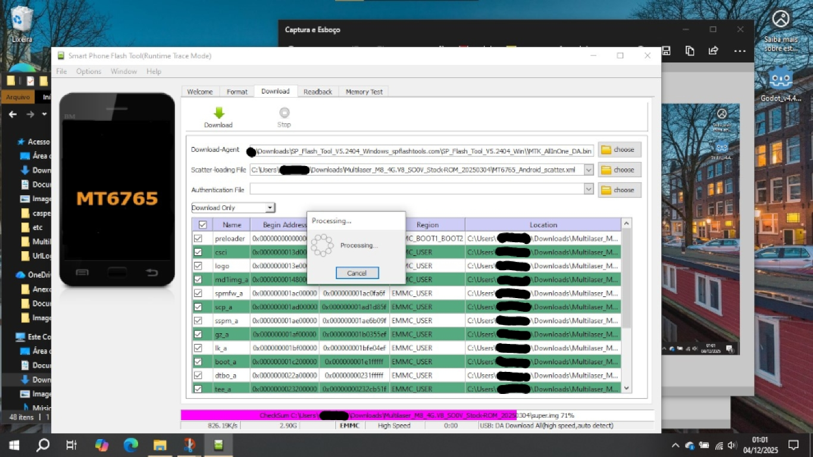

17. Lembre-se do caminho que levava aos arquivos extraídos da stock ROM. Talvez para você o MT6765_Android_scatter.xml do tablet esteja em...
C:/Users/voce/Downloads/Multilaser_M8_4G_SO0V_Stock-ROM_V8.20250304/MT6765_Android_scatter.xml
18. Abra MT6765_Android_scatter.xml.
19. Espere o a leitura do Checksum ser feita. Uma barra de carregamento rosa deve aparecer na parte de baixo da janela do programa.
20. Na caixa de seleção onde contém "Download only", troque para "Firmware upgrade".
21. Com o tablet desligado, clique no botão "Download ↓" no SP Flash Tool. Conecte o cabo USB entre o tablet e o computador, preferencialmente na porta USB 2.0 do computador. Espere o flashing dos arquivos da stock ROM serem feitas e não tire o cabo nem do computador e nem do tablet.
22. Quando o flashing estiver completo, o SP Flash Tool mostrará uma janela com ✅.
23. Desconecte o seu tablet do computador.
24. Remova o chip para pular a necessidade de escrever do PIN do chip e pressione o botão Power (liga/desliga) para ligar o tablet.
25. Após a animação de boot da Multilaser, aparecerá a tela de "Olá" do Android. Pule a inserção do chip. Se pedir o PIN do chip, retire o chip do tablet.
26. Pule a página de inserção do chip e não se conecte ao Wi-Fi.
27. Pule, desative ou deixe da forma como estão as próximas páginas de configurações de bloqueio de tela, de relógio e alguns serviços do Google serão oferecidos.
28. Após as páginas de configurações, você deve estar na tela inicial.
29. Abra a gaveta de aplicativos e abra as Configurações.

30. Desliza a lista até a última opção "Sobre o tablet" e clique nela.
31. Deslize até a penúltima opção "Número da versão" e clique 7 vezes seguidas sobre ela.
32. A mensagem de "Você agora é um desenvolvedor" deve aparecer.
33. Pressione o botão de "voltar". E clique em "Sistema".
34. Clique em "Opções do desenvolvedor".
35. Ative "Desbloqueio de OEM"
36. Deslize para baixo e ative a "Depuração USB" na seção de Depuração.
37. Deslize para baixo e, na seção de Redes, clique na opção "Configuração USB padrão".
38. Selecione a opção "Transferência de arquivo".
39. Conecte o tablet ao computador via cabo USB.
40. Na pasta onde contém os arquivos executáveis do platform-tools, segure o botão do teclado Shift ↓ e aperte o botão direito do mouse/touchpad. O botão de "Abrir janela do Prompt de Comando/Terminal/PowerShell aqui" deve aparecer.
41. Abra o Prompt de Comando/Terminal/PowerShell e escreva .\adb.exe devices, isso deve mostrar algo como
C:\Users\voce\Downloads\platform-tools> .\adb.exe devices
* daemon not running; starting now at tcp: 5037
* daemon started successfully
List of devices attached
XXXXXXXXXXX unauthorized
42. Veja o seu tablet e dê a permissão de depuração USB. Caso desconecte o cabo e não deseje ter que dar permissões de novo, ative "Sempre permitir a partir deste computador".
43. No Prompt de Comando/Terminal/PowerShell e escreva .\adb.exe reboot bootloader. A tela do tablet desligará e em alguns segundos ele ligará no modo Fastboot.
44. No Prompt de Comando/Terminal/PowerShell e escreva .\fastboot.exe flashing unlock. Essa mensagem aparecerá...
Tradução da mensagem para o português do Brasil
Desbloquear o bootloader?
Se você desbloquear o bootloader, você será capaz de instalar software de sistemas operacionais customizados neste telefone.
Um sistema operacional customizado não está sujeito aos mesmos testes que o sistema operacional original e pode fazer o seu telefone e os aplicativos instalados pararem de funcionar corretamente.
Para prevenir acesso não-autorizado aos seus dados pessoais, ao desbloquear o bootloader também serão apagados todos os dados pessoais do seu telefone (uma "restauração de dados de fábrica").
Pressione os botões de Aumentar/Diminuir o volume para selecionar Sim ou Não.
Sim (Aumentar volume): Desbloquear (pode anular a garantia).
Não (Diminuir volume): Não desbloquear o bootloader.
45. Desbloqueie o bootloader pressionando o botão de Aumentar volume.
46. No Prompt de Comando/Terminal/PowerShell, aparecerá a mensagem parecida com essa
C:\Users\voce\Downloads\platform-tools> .\fastboot.exe flashing unlock
(bootloader) Start unlock flow
OKAY [ 5.541s]
Finished. Total time: 5.747s
47. Escreva o comando `.\fastboot reboot fastboot` para reiniciar o tablet no modo fastbootd e fazer a instalação da GSI por lá.
48. Continuação do guia: Como instalar a GSI no Multilaser M8 4G